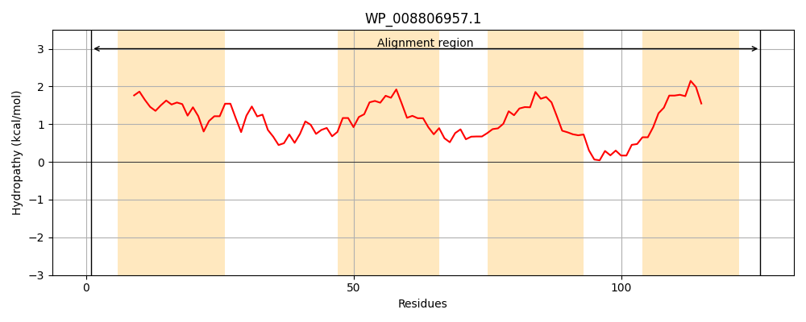
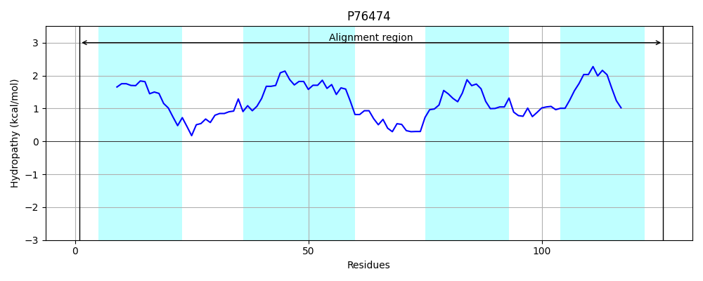
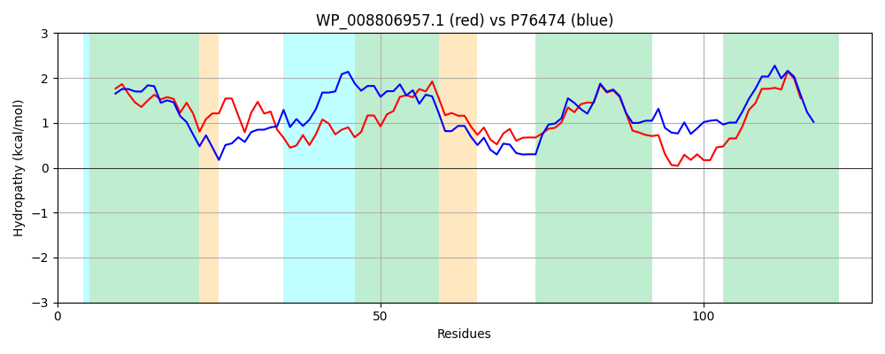

Hit Accession: P76474
Hit TCID: 2.A.7.22.1
Hit Description: gnl|BL_ORD_ID|11472 gnl|TC-DB|P76474|2.A.7.22.1 Probable 4-amino-4-deoxy-L-arabinose-phosphoundecaprenol flippase subunit ArnF OS=Escherichia coli (strain K12) GN=arnF PE=1 SV=2
Mach Len: 126
e:0.000000
Query TMS Count : 4
Hit TMS Count: 4
TMS-Overlap Score: 3.500000
Predicted Substrates:CHEBI:59062;polymyxin
BLAST Alignment:
| Protein Hydropathy Plots: | |
|---|---|
|  |  |
Pairwise Alignment-Hydropathy Plot: | |
|  | |